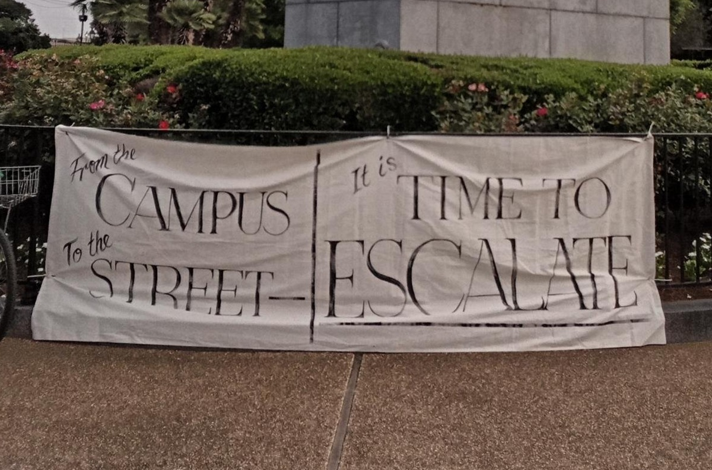

Filed under: Critique, Solidarity, The State, US, War

A critical reflection on the “framing of safety” emerging within the contemporary movement in solidarity with Palestine exploding across college campuses in the so-called United States.
It has become common for participants in the Palestine Liberation Encampments, which have spread across the United States, for protesters to call for participants to be “safe,” and especially for Black and brown students to be protected. While we must recognize that Black and brown students are more likely to be subjected to violence at the hands of the police in general, the framing of “safety” has had a conservatizing force for this movement – and as a result, has served to prevent escalation.
To be absolutely clear – the genocide unfolding in occupied Palestine must be stopped by any means necessary. At the same time, movements will always face both external limitations and internal limitations, while external limitations are easy to see – the most obvious example is direct police violence. Internal limitations are a bit more difficult to see – these are the ideas and inherited tactics which prevent us from accomplishing our goals. We wish to explain here how the language of “safety” is in fact a liberal ideology (we can call it “safety-ism”) which has a conservatizing effect on our movement and which prevents us from winning.
Let’s explain why this is troubling in the plainest possible language:
1. There Is No Such Thing As a Safe Protest
Protesting injustice is designed to place people in positions of risk. However, we assume a position of risk to topple a regime of structural violence. By taking brave risks together, we believe that we have the power to destroy the root causes of structural violence. We substitute the possibility of violence being meted out against ourselves as willing and courageous protesters for the unwilling and, in this case, GENOCIDAL, violence being used by the system in power.
2. The Palestinian Resistance Has Called for American University Students (and the Broader American Public) to ESCALATE Their Actions Against an Ongoing Genocide
History teaches us that when a genocide begins, the only way that the process of systematic killing stops is BY MAKING IT STOP. As such, the Palestinian Resistance–the people who are on the ground fighting and dying–are calling for American students to escalate. It is our duty to heed their call!
3. When the Situation Escalates, People Who Are Afraid Will Mask Their Fear Using Political Language – We Must Meet Them with Compassion but Refuse to Back Down
With great compassion, we recognize that escalation can be a scary prospect, especially for those who believe they have more to lose. At the same time, we must reject the use of politicized language to de-escalate protests. Nobody is making anybody do anything they don’t want to, and we need to maintain cohesion in the face of those attempting to spread fear. When people are afraid and using politicized language to get others to back down, it is best to meet these people with compassion, recognize their fears as legitimate, and then move forward with the tasks at hand. Again, what we are combating is genocide and so all forward initiative must be maintained at all costs.
4. We Keep Us Safe By Escalating
When the police are mobilizing to attack or evict us, we might be tempted to disperse in response. At the same time, our movements are kept safe through their escalation. If, following a raid on an encampment and arrests, students willfully go home, the administration will see that their strategy of repression is working and will double down on their violence. If, however, the movement continues to adapt and finds new ways of escalating, those same participants will be protected by the movement’s growing strength from which will flow public support, material support, spiritual support, and the knowledge that our risks have been worth it because the movement is fucking winning.
5. Black and Brown Protesters Who Choose to Escalate Carry the Torch of a Proud History of Militant Resistance
Remember, Black and brown protesters carry the torch of a proud tradition of direct resistance to colonialism, racism, and capitalism. Fred Hampton and Assata Shakur fought directly against the police of America. Martin Luther King Jr., contrary to the whitewashed image of him, led many Black Americans on nonviolent marches specifically designed to provoke the police to violence and thus show white America the reality of the racial system through images of the violence shown on the nightly news. Being Black does not mean that you need to have white people protect you with their skin privilege– Black Liberation will be won by Black people just as Palestinian Liberation will be won by Palestinian people directly.
6. Proximity to Suffering Does Not Automatically Produce the Best Political Ideas
At the same time, it is a reflection of the dehumanizing contours of racial ideology that equates Black and brown people with having the most daring and advanced political ideas. Of course, proximity to the worst aspects of this racist system can have a radicalizing effect on many Black and brown people. While we should all learn about and empathize with these experiences, we should not make the mistake that this necessarily means that Black and brown students always have the best political ideas. Doing so is an expression of racial ideology because it places an undue burden on Black and brown people, it is dehumanizing in that individual thought and political work are discounted for one’s identity, and, finally, it serves to prevent the most effective ideas from guiding our movement instead of a tokenizing ideology which discounts the content of Black ideas for any idea so long as it emerges from a Black person.
7. Only the Most Courageous People to the Front!
We have seen many times that in moments of looming confrontation, a call is made for “white people to the front” to protect Black and brown people from police violence. Unfortunately, doing so often contributes to violence against Black and brown students, but using moralizing language and playing upon white guilt to coerce often unwilling white participants to the front. These same people, who were not willing to be at the front, quickly cave at the first signs of violence. Instead – when shit is going down, we need to have the most courageous and willing people at the front. A coalition of the most courageous and willing will stand a much greater chance of repelling police encroachments and advancing the movement to victory.
Conclusion
By identifying the “safety-ism” as a conservatizing ideology, we seek to overcome its limitations and pose an alternative idea in its place. Heeding the call for escalation, we can call the alternative, revolutionary, idea “escalationism.” To achieve victory we must escalate the struggle and combat all forces – external and internal – which prevent us from doing so.
TOGETHER WE ESCALATE FOR PALESTINE
AGAINST THE POLICE AROUND THE GLOBE
FOR THE LIBERATION OF THE OPPRESSED
AND THE END TO IMPERIALISM ONCE AND FOR ALL!
– Fire Ant Movement Defense
photo: @readytoescalate